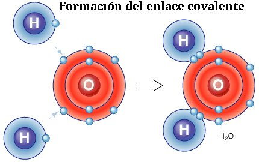
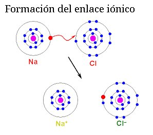

QUIMICA
¿Qué es un enlace químico?
Imagina que los átomos son como piezas de un rompecabezas. Los enlaces químicos son las pequeñas manos que unen estas piezas para crear imágenes más grandes y complejas. Estos enlaces se forman gracias a la atracción entre los electrones de los átomos.
ENLACE METALICO

ENLACE COVALENTE

ENLACE IONICO

Tipos de enlaces químicos:
Existen diferentes tipos de enlaces químicos, cada uno con sus propias características:
Enlace iónico:
Es como si un átomo le "prestara" un electrón a otro. Esto crea una atracción entre los átomos, como si fueran imanes. Un ejemplo es la sal de mesa (cloruro de sodio).Enlace covalente:
En este tipo de enlace, los átomos comparten electrones. Es como si se dieran la mano. El agua (H₂O) es un ejemplo de una molécula formada por enlaces covalentes.Enlace metálico:
Este enlace se da entre los metales y permite que los electrones se muevan libremente entre los átomos. Gracias a este enlace, los metales suelen ser buenos conductores de electricidad y calor.¿Para qué sirven los enlaces químicos en la vida cotidiana?
Los enlaces químicos están presentes en todo lo que nos rodea y son fundamentales para la vida. Algunos ejemplos son:
La comida: Los nutrientes que obtenemos de los alimentos están unidos por enlaces químicos.
Los medicamentos: Las moléculas de los medicamentos actúan en nuestro cuerpo gracias a los enlaces químicos que forman con las células.
Los materiales de construcción: Los materiales como el cemento y el acero se forman gracias a enlaces químicos.
La tecnología: Los componentes electrónicos de nuestros dispositivos están hechos de materiales unidos por enlaces químicos.
MAPA CONCEPTUAL